🎯
0
Estudantes na amostra
2º e 3º ano do Ensino Médio, ouvidos presencialmente nas cinco escolas.

Fomos até as escolas para compreender as principais dores, frustrações, necessidades e expectativas dos estudantes que utilizam o PreparaSP e outras plataformas digitais como apoio na preparação para o vestibular e o ENEM. Este relatório reúne os principais insights coletados durante essa pesquisa de campo.
Pesquisa qualitativa de campo, conduzida com estudantes reais, em ambiente real, com objetivo de capturar percepções espontâneas sobre o uso do PreparaSP.
Cinco unidades da rede estadual, com turmas de 2º e 3º ano do Ensino Médio.
Conversas abertas, em grupo, sobre a rotina de estudo e o uso da plataforma.
Cada conversa foi documentada integralmente para análise posterior, preservando a fala de cada estudantes.
Organização e codificação dos trechos em insights, dores e oportunidades acionáveis.
Além dos estudantes, ouvimos professores, coordenadores e diretores das unidades escolares. São eles que acompanham o uso do PreparaSP no dia a dia e enxergam, de perto, o que sustenta o engajamento e o que ainda precisa evoluir.
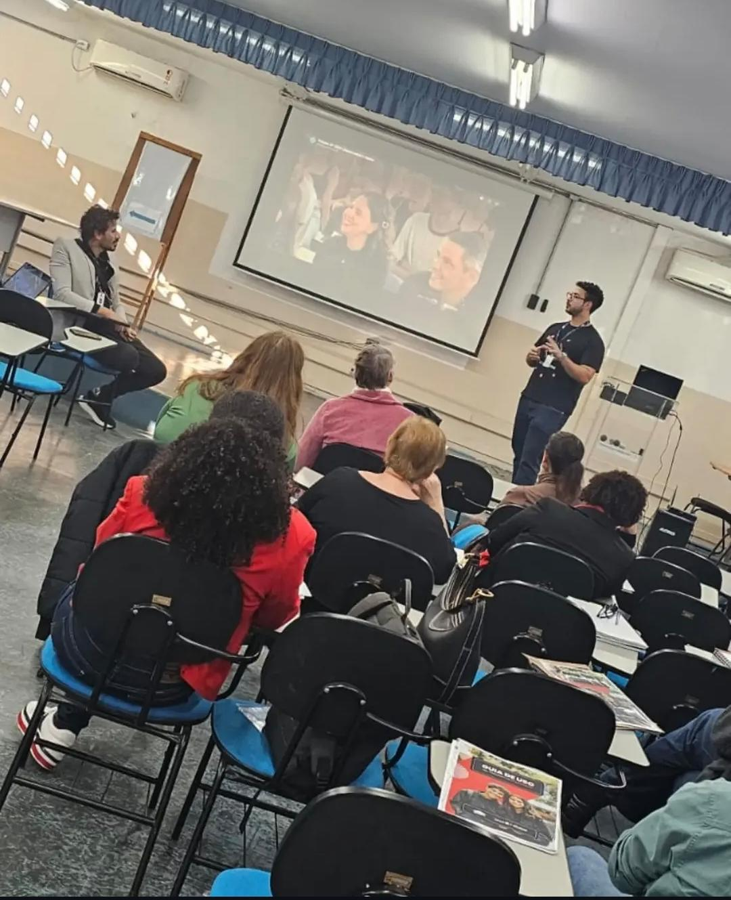
Professores, coordenadores e diretores
A leitura dos educadores reforça que a plataforma é mais potente quando conectada à rotina pedagógica da escola, e não usada de forma isolada pelo estudante.
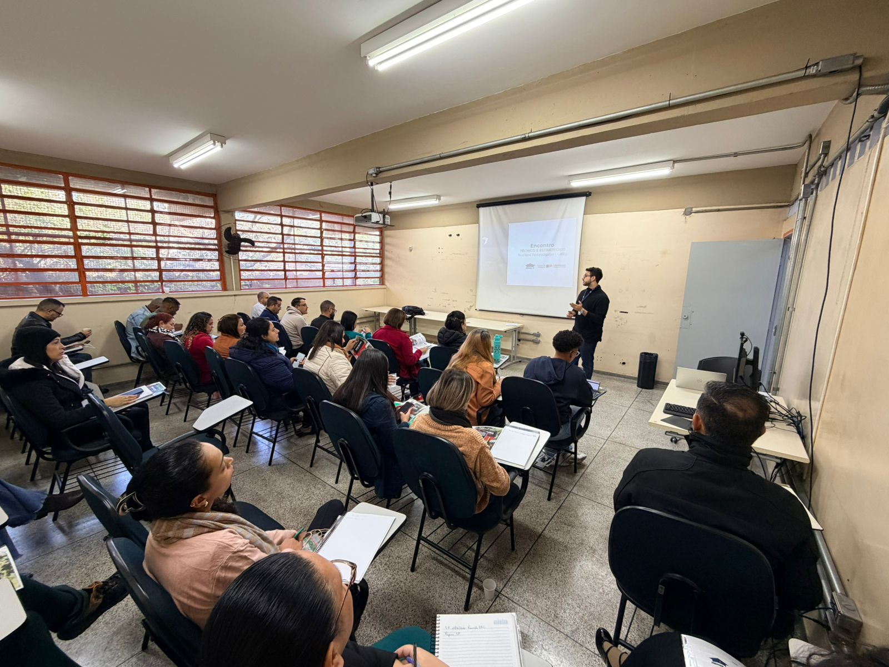
Professores, coordenadores e diretores
A equipe destaca o valor do PreparaSP como apoio à preparação para o vestibular e o ENEM, e aponta a clareza de orientação ao estudante como ponto a fortalecer.
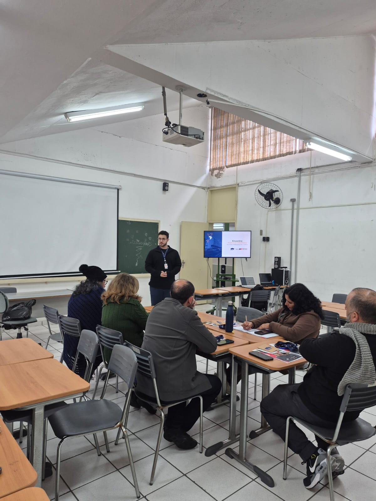
Professores, coordenadores e diretores
Os educadores observam que o acompanhamento próximo da turma faz diferença direta no engajamento e na constância de uso da plataforma pelos estudantes.
As barras indicam com que recorrência cada tema apareceu nas conversas com os estudantes. É uma leitura qualitativa de quanto o assunto se repetiu.
Os obstáculos que mais apareceram quando os estudantes falaram sobre usar, ou desistir de usar, o PreparaSP.
As oportunidades mais claras para tornar o PreparaSP mais útil, mais usado e mais querido pelos estudantes.
Trechos reais das conversas com os estudantes.
Fotografias das visitas às escolas e das conversas com os estudantes durante a imersão presencial em campo.
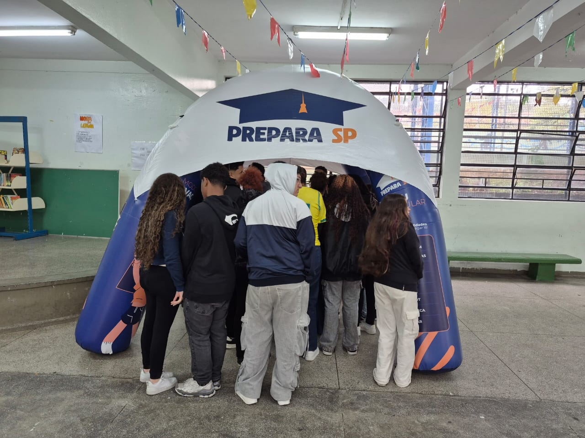
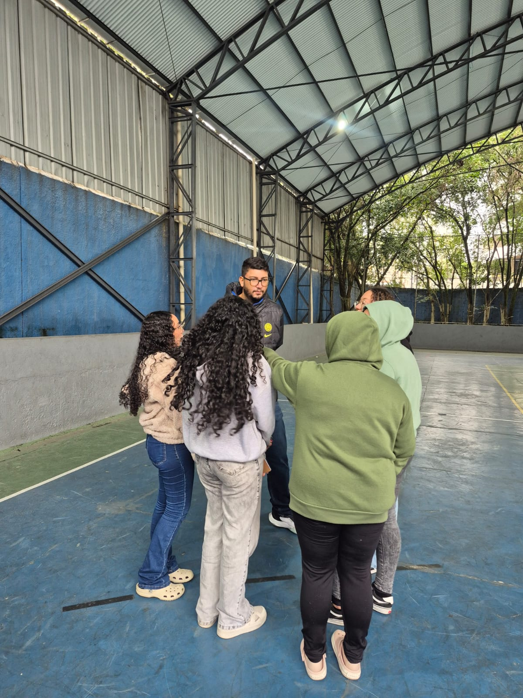
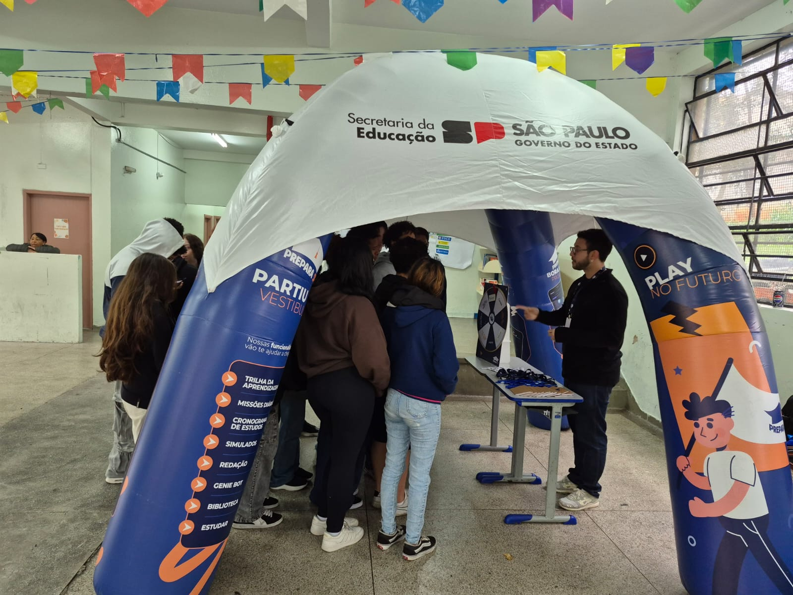
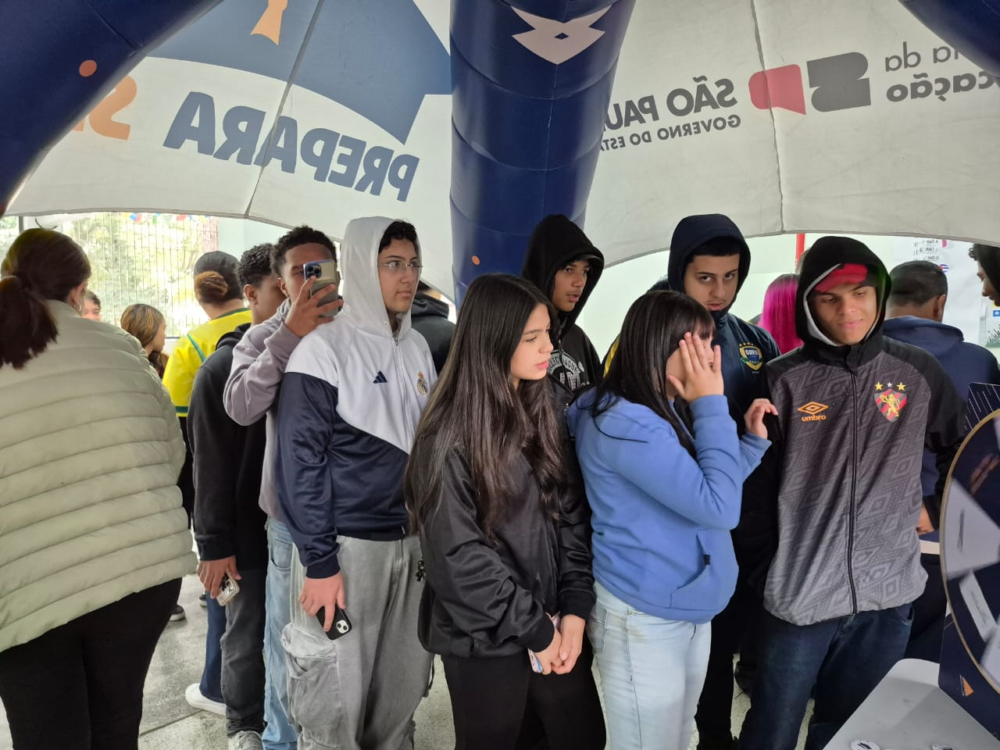
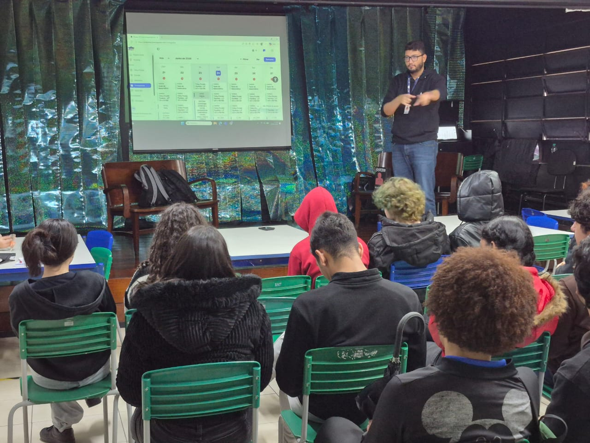
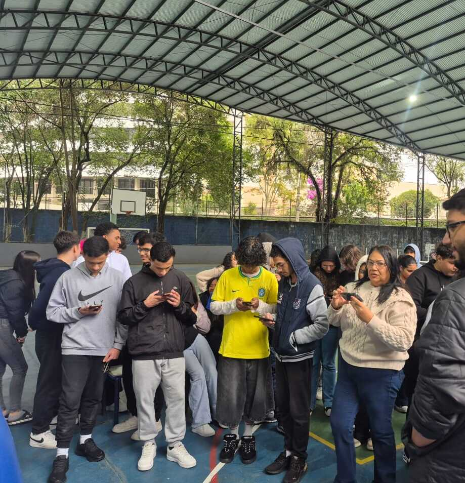
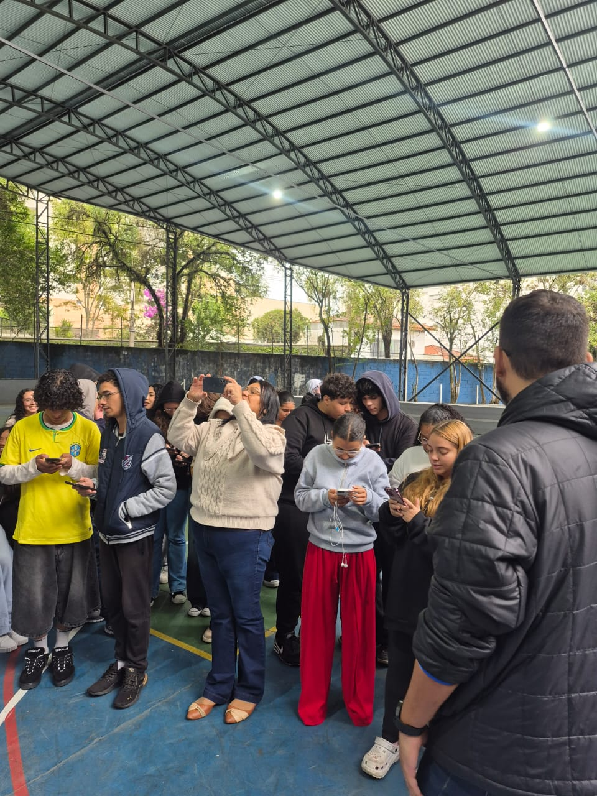
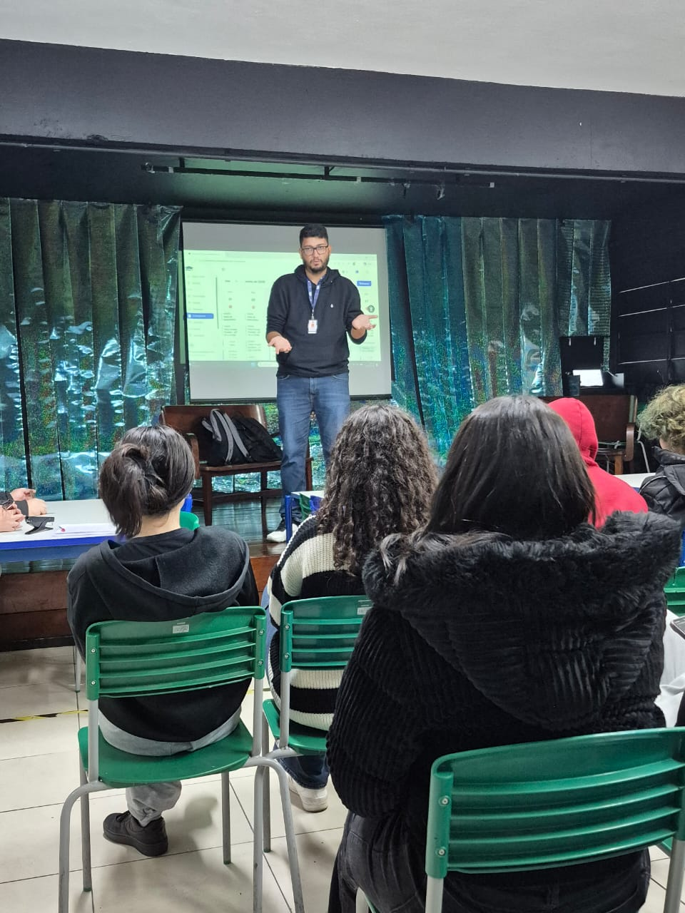
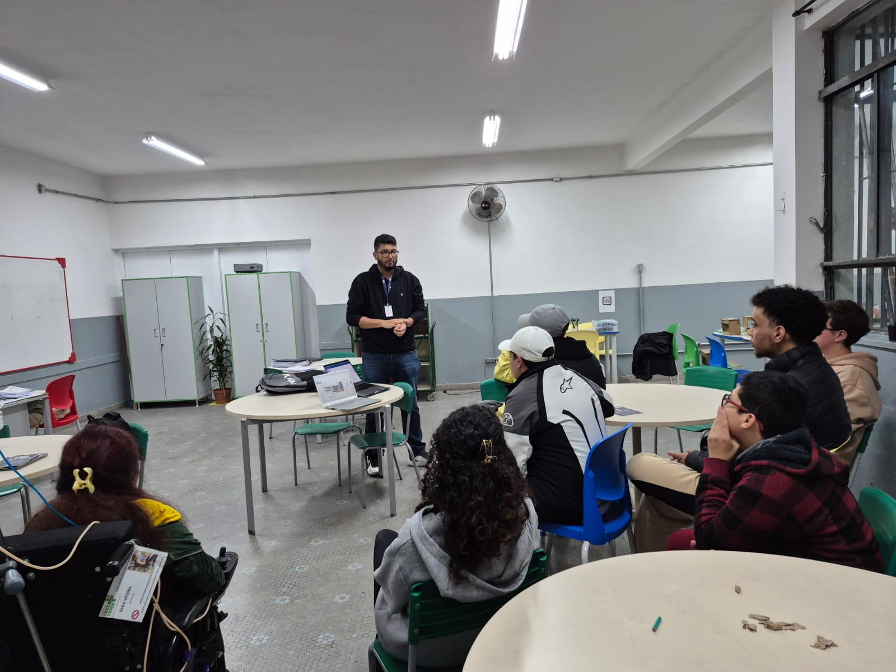
Movimentos concretos, ordenados por prioridade, para evoluir o PreparaSP a partir do que ouvimos em campo.